Real recoveries
Real Pets. Real Recoveries.
Stories from the families who trusted us with their best friends.
Pet Health Alternatives clients report recoveries from serious conditions using holistic care - including a diabetic dog's non-healing bedsore resolved in five weeks with ozone therapy, and a dog with stage-5 lymphoma reaching remission with acupuncture and ozone alongside chemotherapy. Below are real stories, in their owners' own words.
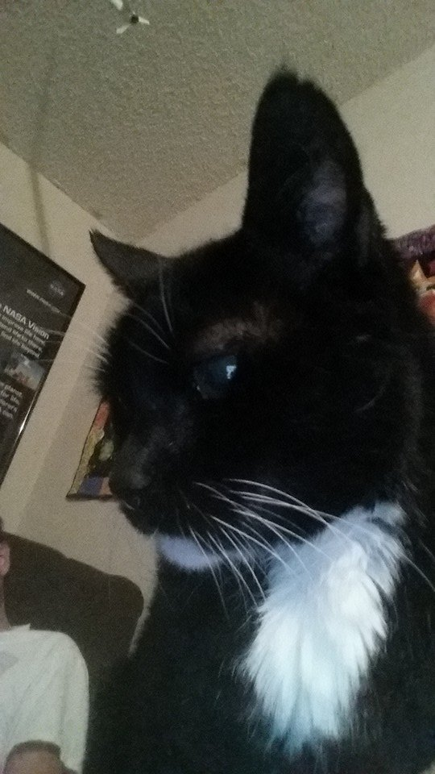
Bootsie
Katie & Sam Bowen
Bootsie got sick right before Christmas in 2015. Our vet at the time seemed apathetic about her chances, and the only option he gave us was a treatment plan where just one treatment alone was $2,000 - so we needed to look for other options. That search led us to you, Dr. Caputo. From the first meeting, we felt a silver lining in the dark clouds. We could give Bootsie affordable treatment that wouldn't be uncomfortable for her and would hopefully extend her life. Despite her kidney issues, she kept going for 7 more months - happy and very close to normal most of the time. We were able to truly enjoy our time with her. I don't regret giving her, and us, a chance to enjoy more time together, and I appreciate the wonderful treatment you gave her.
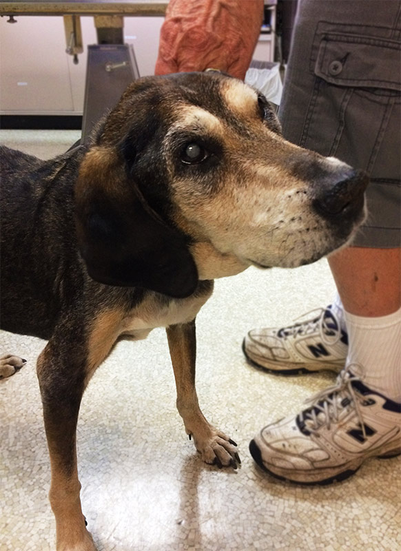
Brutus
Malcolm, Debbie & Brutus McHoul
I have a 14-year-old Black and Tan Coonhound. He is diabetic, takes four insulin shots a day, has neuropathy, a tumor in his spleen, is blind, and has old-dog syndrome. Because he couldn't get up, he developed a bed sore on his hip that was not healing - we didn't think it ever would. It was suggested that ozone therapy could help, and that's how we came to know Dr. Caputo, a godsend for our precious Brutus. The sore was about the size of a silver dollar and down to the bone. He received his first treatment and, one week later, to our amazement, it was starting to heal. Each week he got better; we used ozone-infused olive oil at home daily. We did this for five weeks, and the dog that was not supposed to heal was healed. I cannot say enough about Dr. Caputo and the service she provides. Thank you so much for healing my old dog.
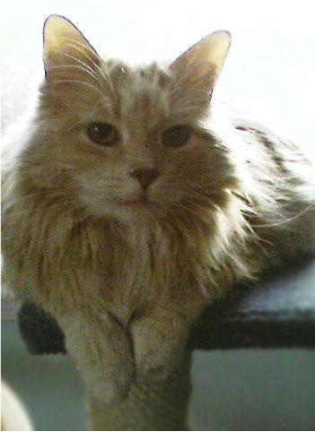
Fritz
Elaine Campion
About 10 years ago, I was going through a very difficult time, having just lost my husband. Dr. Caputo helped me find the little guy who would bring my heart back to center. Once I saw the photo of Fritz, I knew it was a perfect match - and her husband drove Fritz from southern Virginia to me in Washington, DC. It was love at first sight. In the years that followed, Dr. Caputo continued to show her love and care for Fritz, using homeopathic supplements and whatever else was needed. Whenever I had a problem, she was there with personal consultations to guide me. She is an expert at reading lab results, X-rays, and more. Fritz was a very special part of my life - not just a cat, but part of my family. I don't know what I would do without Dr. Caputo!
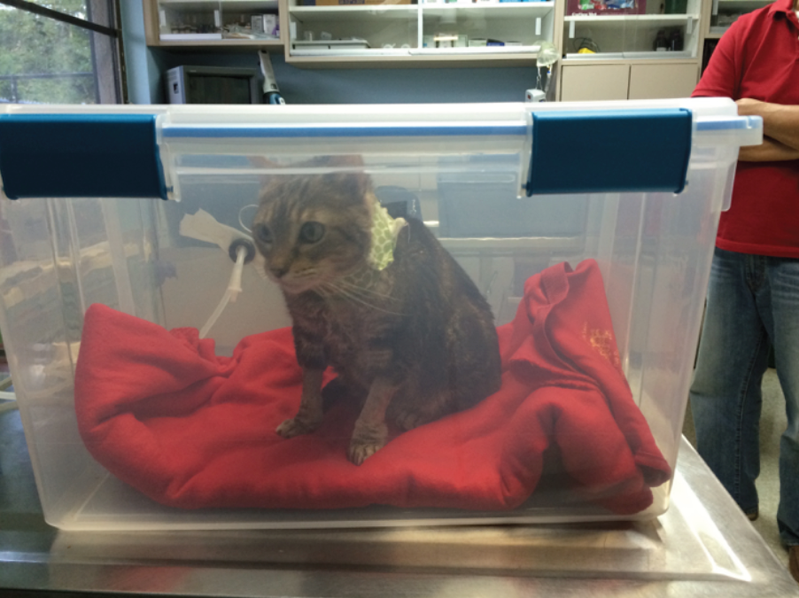
Hinata Tom
A grateful family in Orlando
Our story begins with our son, who struggled with depression after two tours of duty in Iraq. My husband had the genius idea of getting him a cat, so we adopted a rescued brother/sister pair - Hinata and Neji. Our son has told us more than once that those cats saved his life through their unconditional love; when he was depressed, they would crawl into bed and not get out until he did. When Hinata was 3, she got cancer behind her eye. We contacted Dr. Caputo about ozone therapy because it was difficult for Hinata to breathe. My husband built a chamber for her, and she loved her treatments - we traveled from Orlando to Dunedin every week. Her cancer was aggressive, and eventually we lost her, but we have no doubt the treatments made her life easier and extended her time with us. No effort to save those you love is ever wasted. Thank you, Dr. Caputo - you're the BEST!

Jake
Bonnie Barrett, Clearwater, FL
At 8 years old, my Shepadoodle Jake was diagnosed with stage-5 lymphoma in his liver and both kidneys and given 2–4 weeks to live. I was devastated. I reluctantly agreed to the 6-month chemo protocol, but I also wanted as many natural therapies as possible. I was thrilled to find Dr. Caputo - warm, caring, and very gentle with Jake. We did chemo on Mondays, acupuncture on Wednesdays, and ozone on Thursdays. Jake went into remission and I had him for another quality 1.5 years. He actually loved his ozone days; he was relaxed, spunky, and feeling good. I know the ozone and acupuncture improved both the quality and length of his life. Dr. Caputo went above and beyond the standard of care - knowledgeable, supportive, and a true friend. I will be forever grateful.
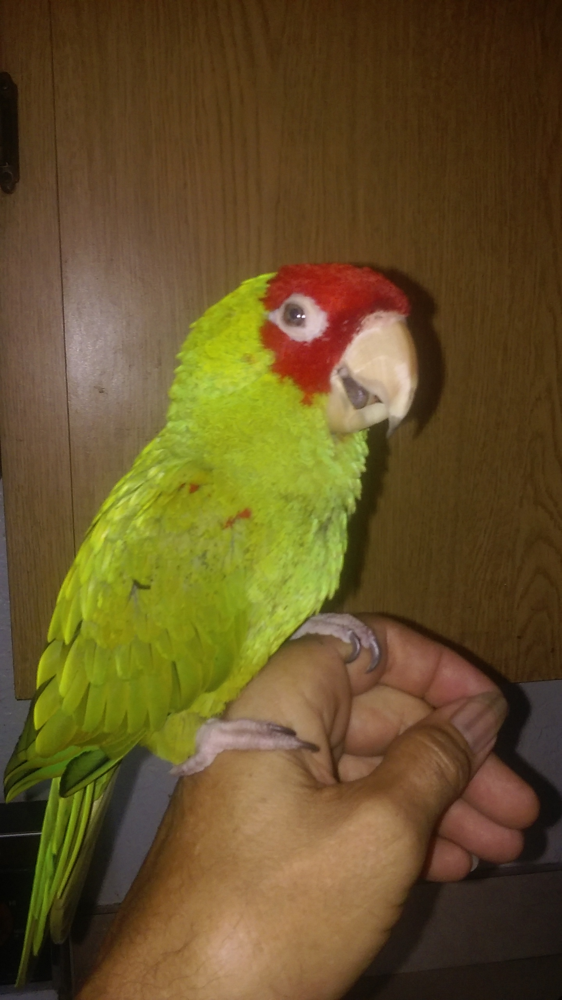
Joe
Martin Rivera
My name is Martin Rivera, and my pet is Joe, a Cherry Head Conure I've had a long time - a great pet and a great friend. In early 2017, I found him at the bottom of his cage, fluffed up and not himself. An avian specialist found he was underweight and possibly had a mass or liver disease. After supportive care he improved, but I wanted an alternative approach instead of more stressful tests. I consulted Dr. Caputo, who had supplements that could help Joe's liver. She wouldn't do anything until I cleared it with the avian specialists. With Amino B Plex and Liquid Hepato, plus continued crop feeding, the treatment was very effective - my bird gained strength and weight, and he's happy and dancing again. I thank Dr. Caputo very much for her care, love, and kindness for Joe.
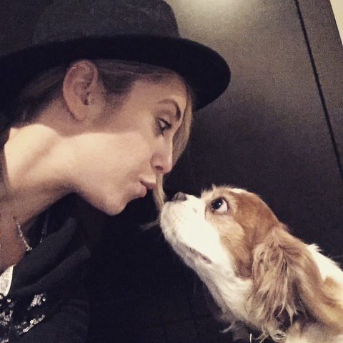
Joplin Pearl
Joplin Pendry
I have a 10-year-old Cavalier King Charles Spaniel named Joplin Pearl. She ran into severe health issues this past summer - a stroke that led to a seizure, leaving her unable to walk without falling over for months. She was very unhappy and not very alert. Dr. Caputo had saved my mom's dog, so I had her look at Joplin too. She started giving Joplin ozone therapy every two weeks, along with vitamin support for her heart and immune system. Joplin became more stable on her feet and far more alert. We kept up treatment, and Joplin is now totally stable and able to run, jump, and stand on her hind legs again. She is super happy, with bright beaming eyes, and is like a puppy again. Thank you so much for saving not 1 but 2 of our floofers!

Max
Maureen O'Keefe
On Christmas Day 2016, I was outside playing ball with my two-year-old German Shepherd, Max. As I watched him run back to me, my eyes filled with tears - I had been given the best Christmas present I could ever ask for: my dog was alive and well. Six months earlier, Max had become ill, dropping from 72 lbs to 55 lbs, and a caring vet couldn't find the cause. When the plan was to put him on drugs, I called Dr. Caputo. She treated Max with diet, supplements, and acupuncture, and his appetite improved almost immediately. She spent hours of her own time researching his rare disease and designing a plan that included diet, nutrition, acupuncture, immunotherapy, and weekly ozone therapy. She would call or text just to check in. Quite honestly, I have never seen a veterinarian care as much about a pet and their owner. Max is alive and well today - I have no doubt that's thanks to Dr. Caputo.
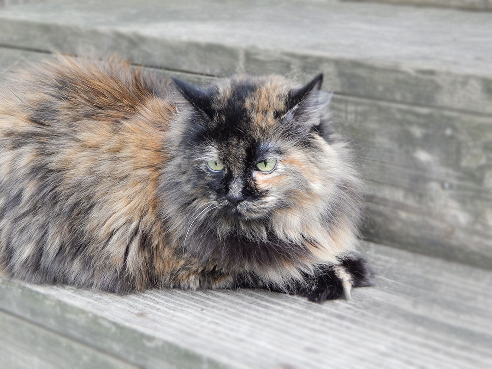
Phoebe
Elaine Campion
Phoebe was a very special cat - so fluffy she looked like a round fur ball when she curled up. She was a rescue, having been dropped out of a car with her kittens many years ago. The most amazing thing about Dr. Caputo is that she can read cats so well. Even though we lived a considerable distance apart, that never stopped her from helping and consulting. I'd tell her what was happening with Phoebe, and she could hone in on just what to do. She recommended supplements Phoebe loved - she'd crunch on them like a treat. One of the hardest things is when your pet gets old and you need the right plan and timing to keep them comfortable. Dr. Caputo has such compassion and love that she made that process easier for both of us. I will always be thankful to have her as a trusted friend and expert veterinarian.
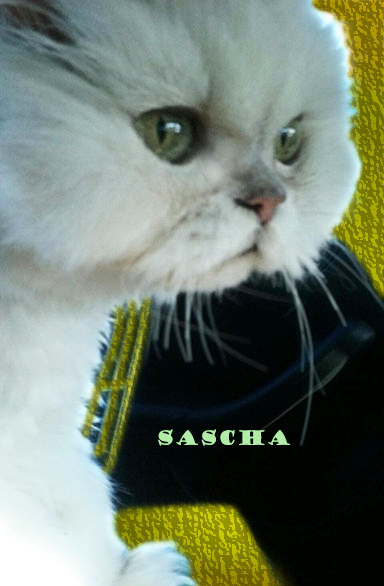
Sascha
Eva Cassaras & Valinda Coyle
Sascha, our thirteen-year-old Chinchilla Persian, was diagnosed with Vestibular Disease in 2014. After medication, we were told it was a condition she might have to live with for the rest of her life due to her age. It was heartbreaking to watch her struggle with the imbalance. We called Dr. Caputo because she offered alternative, holistic care with the convenience of home visits. After one visit, we were encouraged and hopeful. Her gentle, professional manner gave Sascha the care she needed without the stress of travel. With the supplements Dr. Caputo recommended, we were happy to see Sascha begin to improve. Over the next few months, we witnessed the change in her quality of life that we had hoped for - her playfulness and engaging spirit returned. We are forever grateful and would highly recommend her services and healing care.
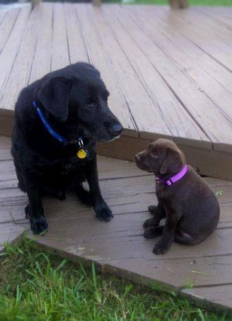
Trooper
Jenny Kingdon
When my black Lab Trooper was 12, I came home from work one day to find him on the floor, unable to get up. His legs just would not work. I was devastated - he was my buddy, and the thought of him not being around was very hard. I called Dr. Caputo, and with her treatment Trooper regained his ability to move around again. Part of his treatment was acupuncture, which strengthened his back end tremendously. Trooper lived to be 16, and I thank Dr. Caputo for all of her care and help!
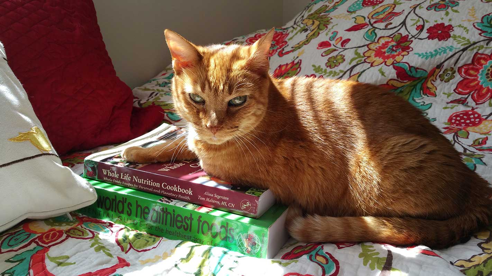
Winkie
Virginia Baden, St. Petersburg, FL
Dr. Cheryl Caputo is one of the most outstanding and caring vets I have encountered in my 50 years of experience with many good vets for my pets. My eighteen-year-old cat Winkie is doing great thanks to the expert nutrition recommendations and clinical skills of Dr. Caputo. I am thrilled to have a trusted holistic vet of her caliber caring for my girl, and I highly recommend Dr. Caputo.
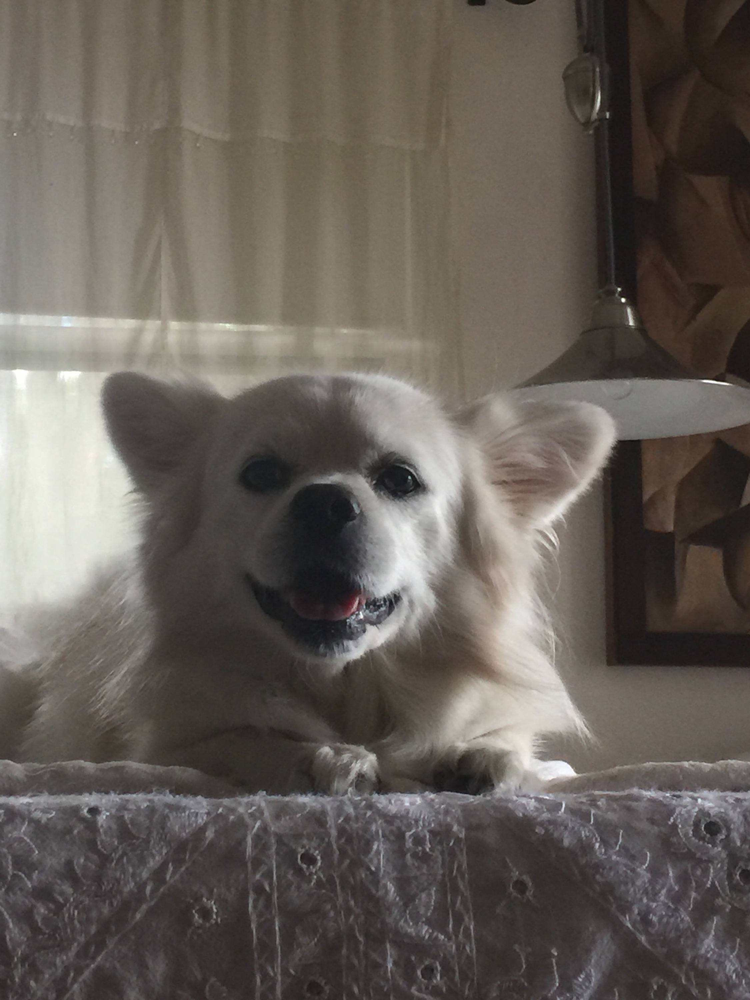
Zazoo
Nina Winters
I have a most precious dog. He suddenly went south - quickly. He hid in the closet, head in the corner, and would not eat. We went to the vet, who put in a feeding tube and started pills for the heart, the liver, and everything else. I asked why this happened, and they said: did you know he is 105 years old? He's my puppy. I asked if there was anything else we could do - acupuncture, perhaps? They told me about a holistic vet, Cheryl Caputo. She came over with her bag of tricks and we started with acupuncture and ozone. Within 3 weeks he was off the feeding tubes. His eyes are bright, he does laps around the swimming pool after his ozone therapy, he plays, he howls, and best of all, he loves. He's back to being about 5 years old with older eyes - handsome, proud, and always my best friend. Thank you from the bottom of my heart!
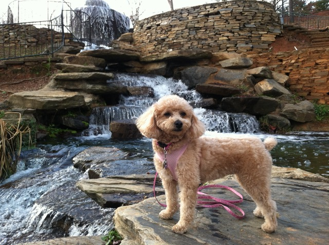
Violet
Violet's family
After years of tests that showed nothing, Violet was finally diagnosed with IBD - inactive, uncomfortable, and losing weight from her already low 9.5 lbs. After learning about fecal transplants, I was referred to Dr. Caputo, and we found her just in time. Following several weeks of ozone treatments, Violet had her first transplant in December 2016. Her symptoms cleared over the next week and she began to regain weight. We continue ozone every other week, and I'm very impressed with the results. I only wish I'd known to take a holistic approach when she was a puppy - so much of her discomfort could have been avoided.
Benji
Jill & Cary Gould
Benji was thrown from a truck window as a puppy and survived on scraps until Heidi's Legacy rescue saved him. We adopted him, and he became a certified therapy dog - visiting nursing homes, children's hospitals, schools, and hospice. At age 9 he developed a rare autoimmune disease, and we weren't sure he'd ever work again. Then we found Dr. Caputo, who is always available and a big reason the disease is now under control. Thanks to her care, Benji at age 12 runs a mile daily, does pet therapy twice a week, and is a thriving adult puppy!
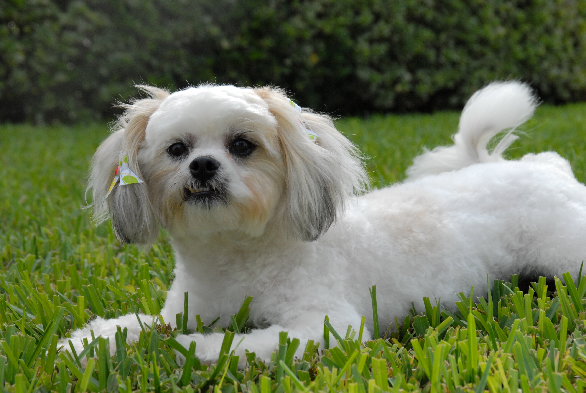
Bella
Bella's family
Bella, a Shih-Tzu Bichon mix, was diagnosed with soft-tissue cancer in her hind leg at age 5. We amputated her leg and proceeded with chemo, and soon after her recovery we discovered Dr. Caputo - amazing, to say the least. She comes to our house at least once a month for acupuncture, ozone therapy, and Adequan and B-12 shots, and Bella loves it. We've grown to love Dr. Caputo's philosophy of mixing Eastern and Western medicine. We're happy to report Bella is doing great at 8 years old, cancer-free and full of energy. We highly recommend Dr. Caputo for your pet - and so does Bella. :)
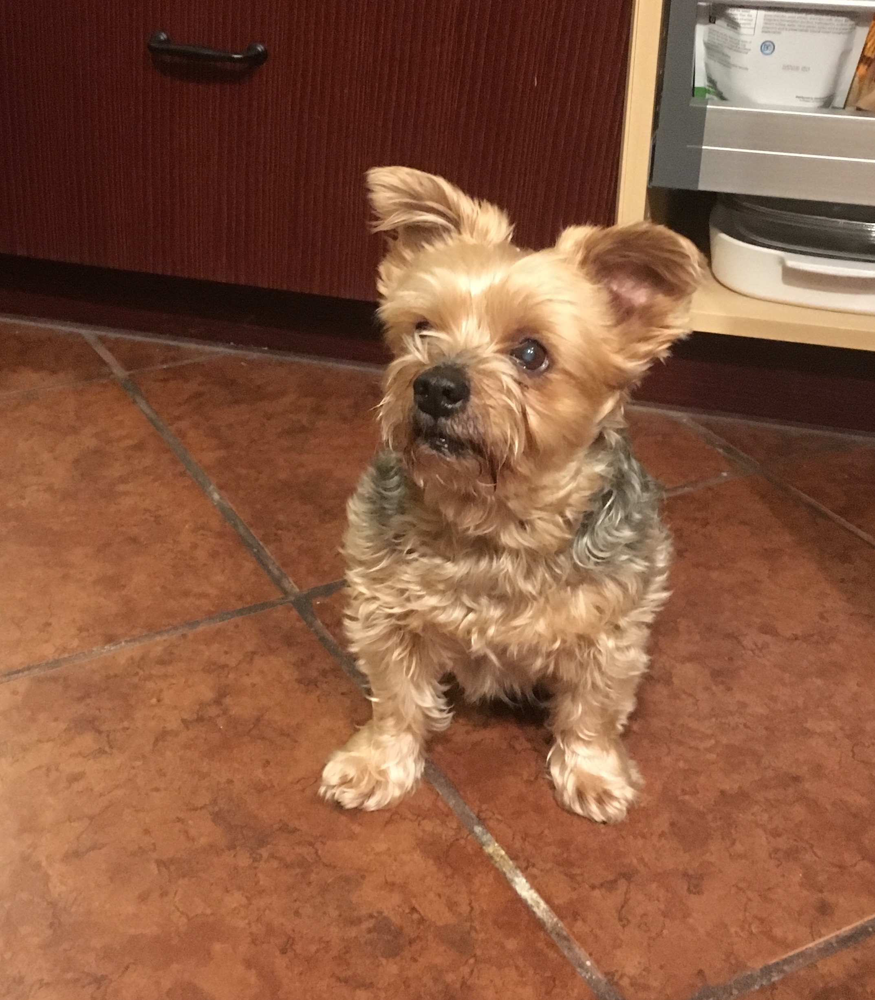
Chibaca
Ginger Rodeghero
Dr. Cheryl has cared for my menagerie of pets for about seven years. Recently my 11-year-old dog had a slipped disc - when it first happened, I thought I'd have to put him down. I got in touch with Cheryl right away and she came over for an emergency visit, returning several times for acupuncture and cold-laser treatments. She even left her cold laser with me so I could treat him daily. With some natural supplements, he's now doing better than before his injury. Cheryl is attentive and gentle, my animals love her, and I love that she makes house visits.
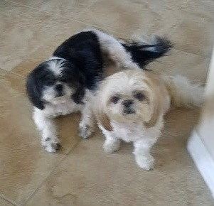
Gigi
Sandy Saposnick
Gigi is my little baby - a Shih Tzu I've had since she was 8 weeks old. In May she was diagnosed with a mass on her spleen; after emergency surgery the mass was benign, and I decided to pursue alternative medicine. I was so lucky to find Dr. Caputo, who is wonderfully compassionate with Gigi - and with her sister Luckie, who comes to every appointment. Gigi has had ozone therapy since May, along with acupuncture and herbs, and is never scared to see Dr. Caputo. Her energy level has been great. If your pet has the dreaded disease, Dr. Caputo is the only one I would trust!
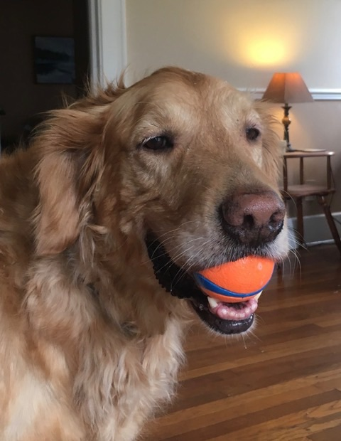
Ben
Maureen O'Keefe
What separates Dr. Caputo from other veterinarians is not just her holistic approach, but how much she truly cares about each pet. Ben, my nine-year-old Golden Retriever, loves nothing more than chasing a ball - but severe arthritis in his back made it harder and harder for him to get up. Dr. Caputo advised acupuncture and Chinese herbs to get the energy flowing and strengthen his hind quarters. After just a week or two, the improvement was very noticeable - he could get up with much less effort! If you want a vet who cares as much about your pet as you do, Dr. Caputo's the way to go.
Is your pet a little under the weather?
Don't wait - prevention is always better than cure. We bring gentle, holistic care right to your door.